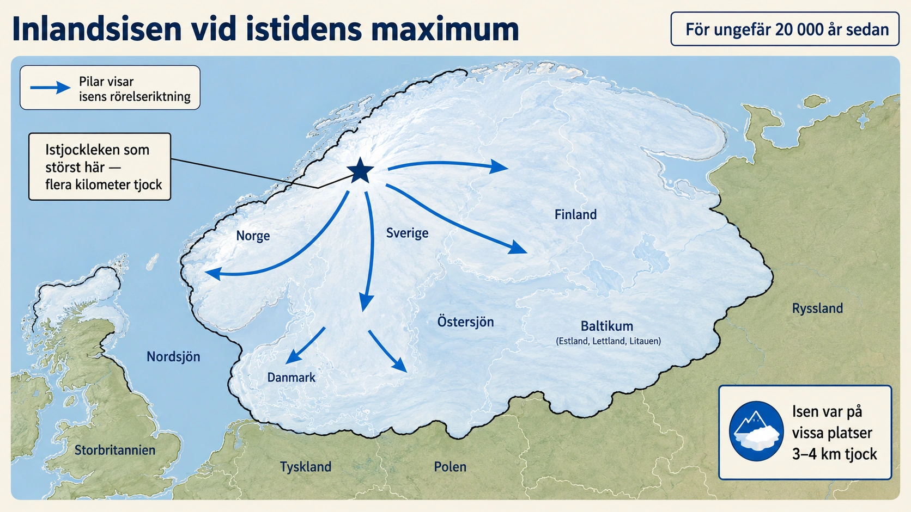

En istid på över 100 000 år
Den senaste istiden kallas i Norden ofta Weichselistiden. Den började för ungefär 115 000 år sedan och slutade för ungefär 11 700 år sedan. Det betyder att den varade i över 100 000 år — många hundra gånger längre än hela mänsklighetens dokumenterade historia.
Men isen låg inte lika långt söderut hela tiden. Klimatet växlade mellan kallare och något mildare perioder. Under de kallaste delarna växte den enorma inlandsisen fram över norra Europa. Den kallas den fennoskandiska inlandsisen — efter de länder som den huvudsakligen täckte: Norge, Sverige, Finland och Danmark, samt delar av Baltikum, norra Tyskland, Polen och Ryssland.
När isen var som störst var den flera kilometer tjock på vissa platser. Det är svårt att föreställa sig — om du stod i Stockholm under den senaste istidens maximum, hade du behövt klättra rakt upp i två eller tre kilometer för att nå isens översta yta. Över din nuvarande position låg det inte hus eller skog utan en mur av blå is, så tjock att den böjde själva jordskorpan nedåt under sin tyngd.

Hur istiden byggdes upp
Den senaste istiden utvecklades inte på en gång. Den byggdes upp stegvis under tiotusentals år.
Det började med att klimatet blev kallare, särskilt under somrarna. Snö började ligga kvar i fjällområden och nordliga områden där det förr hade smält bort. Små glaciärer växte ihop till större isfält. När klimatet fortsatte att vara kallt kunde isen sprida sig från fjällen och de norra delarna av Skandinavien.
Efterhand växte isen ut över större delar av Norden. Den rörde sig långsamt från områden där den var tjockast mot områden där den var tunnare — fungerande som en mycket långsam flod av is. Under sig slipade den berggrunden, drog loss block, transporterade sten och jord, och formade landskapet.
Den kallaste fasen under den senaste istiden inträffade för ungefär 20 000 år sedan. Då brukar man tala om senaste istidsmaximum. Vid den tiden var enorma mängder vatten bundna som is på land. Världshavets nivå var därför mycket lägre än idag — globalt ungefär 100 meter lägre. Storbritannien var landfast med Europas fastland. Indonesiens öar var sammanhängande halvöar. Hela kuster som idag är under vatten låg blottade.
Samtidigt var Sverige täckt av inlandsis. Det fanns inga svenska skogar, sjöar, städer eller odlingsmarker som idag. Landskapet låg under ett tjockt istäcke. Där isen rörde sig slipades bergen och jordmaterial transporterades långa sträckor.
Hur inlandsisen formade Sverige
Inlandsisen påverkade Sverige på flera olika sätt. Den slipade berggrunden och skapade rundhällar — släta, mjukt formade berghällar som finns över hela landet. På rundhällar kan man ofta se båda processerna som arbetat: en mjukt slipad sida där isen kom ifrån, och en brantare, mer sönderbruten sida där isen drog loss material. Isen skapade också isräfflor — repor i berget som visar exakt vilken riktning isen rörde sig.
Isen transporterade också enorma mängder material. När den smälte lämnade den efter sig morän — en osorterad blandning av lera, sand, grus, stenar och block. Morän är Sveriges vanligaste jordart. Om du gräver i en svensk åker eller hage, är det troligen morän du gräver i. Det är det material som isen lämnade efter sig på sin sista vandring.
Smältvattnet från isen skapade rullstensåsar. När vatten forsade i tunnlar under isen sorterades materialet av strömmen. Det grövre materialet, som grus och sten, avlagrades i långa åsar längs vattnets bana. Många svenska rullstensåsar är därför spår av forntida isälvar — bäckar och floder som rann i tunnlar under flera kilometer is. Uppsalaåsen, Badelundaåsen och Stockholms grundläggande ås är alla resultat av denna process.
När isen smälte bildades också stora issjöar, leravlagringar och sandfält. Där vattnet stod stilla kunde finkornigt material sjunka till botten och bilda lerjordar. Där vattnet strömmade snabbare avsattes grövre material. Dagens svenska lerjordar — som bär stora delar av jordbruket i Mälardalen och vid sydsvenska floder — är till stor del resultatet av detta.
När isen började smälta bort
Efter istidens maximum började klimatet långsamt bli varmare. Isen började dra sig tillbaka. Men avsmältningen gick inte jämnt. Ibland gick den snabbt, ibland stannade iskanten upp, och ibland kunde isen tillfälligt växa igen under kallare perioder.
Södra Sverige blev isfritt först — Skåne kanske för 16 000 år sedan. Sedan gradvis norra delar. Isen drog sig stegvis tillbaka mot fjällen och norra Skandinavien. Sista isresterna i Sverige låg i fjällen kring 9 000 år sedan, även om vissa mindre glaciärer på Kebnekaise överlevt fram till idag — sista resterna av den is som en gång täckte hela landet.
När isen smälte frigjordes stora mängder vatten. Samtidigt var jordskorpan fortfarande nedtryckt av isens tyngd. Det här skapade en speciell situation: stora delar av det som idag är Sverige låg lågt, samtidigt som hav och issjöar kunde breda ut sig över områden som idag är land.
Sverige var delvis täckt av vatten efter istiden
När isen smälte bort var inte Sverige genast det land vi ser idag. Tvärtom var stora delar av landet täckta av vatten under olika perioder. Detta berodde på två saker som hände samtidigt:
- Havsytan var påverkad av att isarna smälte. När inlandsisar smälte rann vatten tillbaka till haven, och havsnivån steg globalt.
- Landet var nedtryckt av isens tyngd. När isen försvann låg jordskorpan fortfarande lägre än idag. Därför kunde hav och stora vattenområden nå långt in över nuvarande land.
I delar av Sverige låg vattennivån mycket högre i förhållande till landet än idag. Man talar om högsta kustlinjen. Det är den högsta nivå som havet eller stora issjöar nådde efter istiden. Ovanför högsta kustlinjen har marken inte varit täckt av hav efter istiden. Nedanför den kan man hitta spår av gamla stränder, svallade jordar och leravlagringar.
I Sverige ligger högsta kustlinjen olika högt på olika platser. Den är högst i områden där landhöjningen varit störst, särskilt i delar av Norrland. Där kan gamla strandlinjer ligga långt ovanför dagens havsnivå — vid Höga kusten finns klapperstensfält och andra strandformer flera hundra meter över havsytan. I södra Sverige är landhöjningen mindre, och där ligger högsta kustlinjen lägre.
Östersjöns utveckling efter istiden
Efter istiden gick Östersjöområdet igenom flera olika stadier. Det berodde på att isen smälte, landet höjde sig, och kontakten med världshavet förändrades. Att förstå Östersjöns utveckling är som att läsa en geologisk roman i fyra akter.
Baltiska issjön
När isen fortfarande låg kvar i norr samlades smältvatten framför iskanten. Då bildades en stor sötvattensjö i Östersjöområdet. Den brukar kallas Baltiska issjön. Vattnet hölls delvis instängt av inlandsisen och av landbarriärer mot väst. Det var en kall, instängd sjö som mest tog emot smältvatten från den krympande isen.
Yoldiahavet
När isen drog sig tillbaka öppnades en förbindelse mot väster. Saltvatten kunde då komma in genom det som idag är södra Sverige, och Östersjöområdet blev under en period mer havslikt. Detta stadium kallas Yoldiahavet, uppkallat efter en mussla som levde i det bräckta eller salta vattnet. Det varade i några tusen år.
Ancylussjön
När landhöjningen sedan stängde eller minskade förbindelsen med havet blev Östersjöområdet åter mer av en sötvattensjö. Detta stadium kallas Ancylussjön. Saltvattnet försvann gradvis, och Östersjön blev återigen ett insjölandskap, denna gång varmare och mer livfullt än den ursprungliga Baltiska issjön.
Littorinahavet
Senare steg havsnivån igen och saltvatten kom åter in genom de danska sunden. Då blev Östersjön saltare än idag under en period. Detta stadium kallas Littorinahavet, efter en havssnäcka som trivdes i det saltare vattnet. Efter det utvecklades Östersjön långsamt mot det bräckta innanhav vi har idag.
Östersjön är alltså inte en uråldrig och oförändrad sjö. Den är resultatet av istidens avsmältning, landhöjning och förändrade havsförbindelser. Den har bytt karaktär flera gånger sedan istiden slutade — och fortsätter att göra så även idag.
Landhöjning — landet reser sig efter isens tyngd
När inlandsisen låg över Sverige tryckte den ner jordskorpan. Man kan jämföra det med att trycka ner en boll i en mjuk madrass. När man tar bort handen reser sig madrassen långsamt igen. På liknande sätt började jordskorpan resa sig när isen smälte bort.
Detta kallas landhöjning (eller postglacial landhöjning). Och den pågår fortfarande. Den är störst i norra Sverige, särskilt runt Bottenviken och Höga kusten. Där kan landet höja sig med nära en centimeter per år. På 100 år är det en meter. På 1 000 år är det 10 meter.
I södra Sverige är landhöjningen mycket mindre. Vid Skånes kust är den knapp eller helt obefintlig. I vissa sydliga kustområden motverkas den dessutom av dagens havsnivåhöjning från klimatförändringen — så där "sjunker" landet i förhållande till havet, även om jordskorpan höjs något.
Landhöjningen gör att gamla havsbottnar blir land. Det betyder att mark som en gång låg under havet idag kan vara åker, skog eller bebyggelse. Många lerjordar i Sverige finns på gammal havsbotten — det är därför vissa jordbruksområden i Mälardalen och vid Skånes kuster har så bördiga leror.
Landhöjningen påverkar också kusterna. Nya skär och öar kan komma upp ur havet. Vikar kan bli grundare. Hamnar kan behöva muddras. Sjöar kan snöras av från havet. Landskapet fortsätter alltså att förändras, trots att istiden är slut. I Höga kusten, som är upptagen på Unescos världsarvslista, kan man se denna process i full verksamhet — det är världens högsta postglaciala landhöjning, och man ser tydligt hur tidigare havsbotten gradvis blir torrt land.
Varför finns det så många sjöar i Sverige?
Sverige har omkring 100 000 sjöar större än 1 hektar — fler än någon annan plats i Europa. Istiden är den huvudsakliga förklaringen. Inlandsisen slipade och gröpte ur berggrunden. Den lämnade också morän och andra jordarter som kunde dämma upp vatten. När isen smälte fylldes många sänkor med vatten.
Vissa sjöar ligger i fördjupningar som isen hjälpt till att skapa. Andra har bildats genom att isens avlagringar hindrat vattnet från att rinna undan. Landhöjningen har också gjort att havsvikar har snörts av och blivit sjöar — många mindre sjöar längs Norrlands kuster är gamla havsvikar som blivit instängda när landet höjt sig.
Vänern, Vättern och Mälaren har alla istidens fingeravtryck. Vänern, Sveriges största sjö, ligger i en sänka som isen och dess smältvatten format. Vättern är en lång, smal sjö i ett gammalt sprick-system som isen utnyttjade och fördjupade. Mälaren var en gång en havsvik som snördes av genom landhöjning för bara några tusen år sedan — den är därför geologiskt nästan helt ny.
Det svenska sjölandskapet är därför till stor del ett arv från istiden. Varje gång du fiskar i en svensk sjö, badar i en insjö eller paddlar kajak — då rör du dig i ett vatten som lades dit för bara 10 000 år sedan av en is som är borta sedan länge.
Hur såg Sverige ut när isen försvann?
När isen drog sig tillbaka var Sverige ett mycket annorlunda landskap än idag. Först kom isfria områden med kala berg, grus, lera, smältvatten, issjöar och havsvikar. Det fanns nästan ingen vegetation direkt efter att isen försvunnit — bara naken sten, jord och vatten.
Sedan började växter långsamt vandra in. Först kom tåliga arter som kunde leva i kallt klimat — lavar, mossor, gräs och låga buskar. Senare kom träd som björk och tall. När klimatet blev varmare utvecklades skogar. Det dröjde flera tusen år innan Sverige hade den gröna karaktär vi tar för given idag.
Djur följde efter växterna. Renar, älgar och andra djur kunde sprida sig in i landskapet. Och människor kom också till Norden efter isens tillbakadragande. De tidigaste människorna i Sverige levde som jägare, fiskare och samlare i ett landskap som fortfarande förändrades kraftigt — där issjöar fanns där det idag finns torra slätter, där havet nådde långt in över dagens land, där skogen var ung och tunn.
När du nästa gång promenerar i en svensk skog, går genom en stad eller plöjer en åker — kom ihåg att marken under dina fötter formades av en is som låg där för 11 000 år sedan. Vi lever i istidens skugga, i ett ungt landskap som fortfarande håller på att resa sig från sin tid under isen. Det är en av geografins finaste lärdomar: landskapet är inte gammalt och statiskt — det är resultatet av en pågående process.